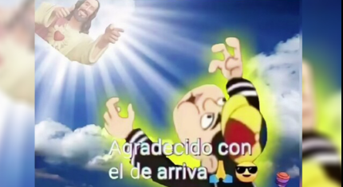

Xiru – Um Andarilho das Palavras e dos Campos
Xiru nasceu em 1972, em uma pequena cidade do interior do Rio Grande do Sul. Desde cedo demonstrou espírito
livre e uma curiosidade insaciável. Cresceu entre o campo e os livros, dividindo o tempo entre o trabalho na
estância da família e as leituras que encontrava na modesta biblioteca municipal.
Na juventude, Xiru percorreu o sul do Brasil como tropeiro moderno, vendendo artesanato, contando causos e
aprendendo com as gentes do caminho. Autodidata, aprendeu a tocar gaita-ponto e escrever poesia, unindo tradição
gaúcha com reflexões existenciais.
Apesar de evitar os holofotes, Xiru se tornou conhecido nas rodas de mate por sua sabedoria simples e olhar
profundo. Até hoje, vive em um rancho à beira do arroio, onde cultiva hortas, escreve crônicas e recebe quem
chega com boa prosa e vontade de escutar o vento.

Xiru é daqueles sujeitos que falam pouco, mas quando abrem a boca, todo mundo escuta. Calmo como a manhã no campo, ele pensa antes de agir e observa mais do que comenta. Tem um humor sutil, às vezes quase imperceptível, que aparece nos momentos certos, arrancando sorrisos sinceros. Sua gentileza não é forçada — é daquelas que vêm do costume antigo de respeitar o tempo das coisas e das pessoas. Xiru é teimoso quando se trata dos seus princípios, mas flexível quando se trata de entender o outro. Carrega uma sabedoria prática, tirada da lida com a terra, e uma sensibilidade poética que surpreende quem o conhece só pela casca. Desapegado do material, valoriza a liberdade, o silêncio e a palavra bem dita. Tem alma de contador de histórias e coração de quem já viu muito, mas ainda se encanta com o nascer do sol.